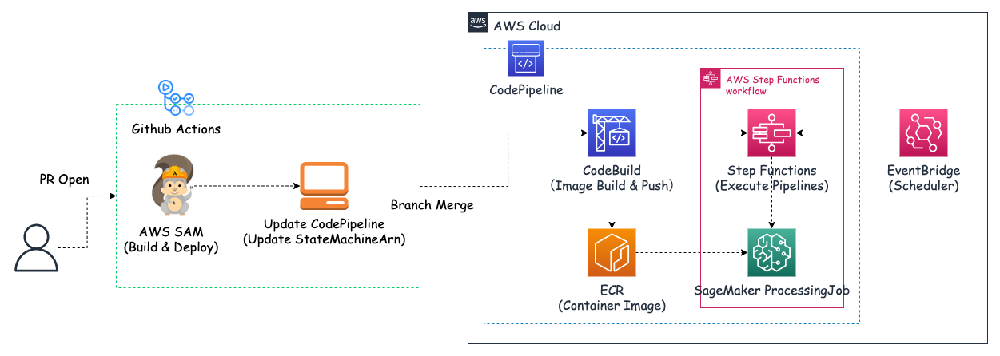
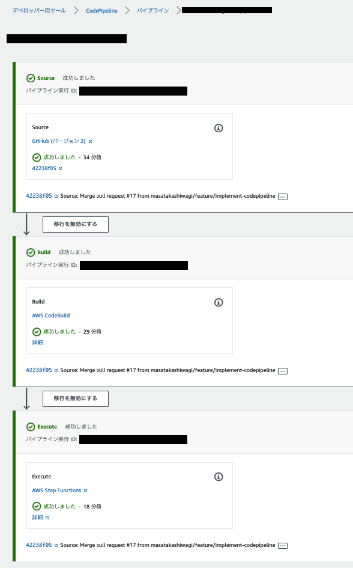
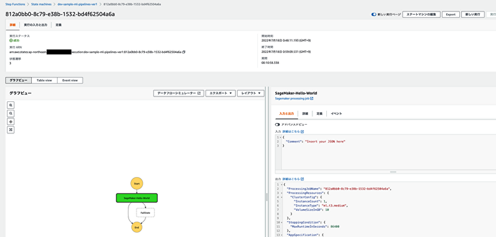
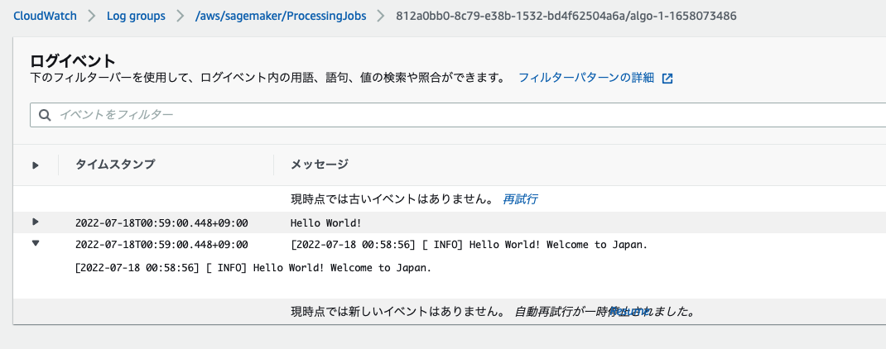

はじめに
2ヶ月以上ご無沙汰になってしまいましたが，久しぶりのテックブログになります．今回はタイトルにもあるように，Github ActionsとCodePipelineを使ってマージトリガーでStep Functionsのパイプラインを動かすCI/CDを構築したお話になります．
今回のモチベーションは，3つほどあります．
- ML系のモデル学習パイプラインの構築とDryRun的なものを毎回手動で実行するのがいいかげんめんどくさくなってきた
- 人数が少ないMLチームだと担当者が対応できない場合に，属人化したものを代わりにオペレーションするのが大変でオペミスが発生する可能性がある
- この辺りはドキュメント整備やチーム内での共有といった部分を整理しておく必要があるのは理解しつつ…
- CI/CD周りの設定含めてもう少し知識を付けてMLOpsのレベルを上げたかった
ML系プロジェクトにおいて，CI/CD整備の優先度が低かったり，そもそもソフトウェアエンジニアに比べてこの辺りの経験や知識が豊富でないということで後回しにされがちですが，MLOpsを考える上でCI/CDは大事なファクターの1つなのでしっかり取り組むべきだと思います（CI/CDの自動化はGoogleが定義しているMLOps level 2: CI/CD pipeline automationに相当する部分）．また，少人数チームの場合は尚のこと，人手をかけられない+属人化を排除する意味でも取り入れていくのが良いかなと思います．
以下のリポジトリにソースコードなどを置いてあります．
CI/CDパイプラインの構成
※ はじめに，CodePipelineの設定やIAMロールの必要な権限は詳細に説明しないのでご了承くださいませ．公式ドキュメントや巷にある詳細な説明がされているブログをご覧下さい．
今回のゴールはGithubのブランチマージから最終的にStep Functionsのパイプラインを動かすところまでになります．本来はStep Functions内でMLのモデル学習を行うパイプラインを構築しますが，今回はサンプルとしてSageMaker ProcessingJobを単発で動かすだけになります．
今回構築したCI/CDパイプラインは以下のような感じになります．

ディレクトリ構成は以下になります．
.
├── .github
│ └── workflows
│ └── sam-codepipeline.yaml
├── .gitignore
├── README.md
├── async-processing
├── cicd-pipeline
│ ├── README.md
│ ├── config
│ │ ├── buildspec.yml
│ │ └── dev-codepipeline-ver1.json
│ ├── container
│ │ ├── Dockerfile
│ │ ├── app
│ │ │ └── src
│ │ │ ├── hello.py
│ │ │ └── logger.py
│ │ ├── docker-compose.yml
│ │ ├── requirements.lock
│ │ └── requirements.txt
│ └── sam
│ ├── env
│ │ ├── dev
│ │ │ ├── samconfig.toml
│ │ │ └── template.yaml
│ │ └── prod
│ │ ├── samconfig.toml
│ │ └── template.yaml
│ └── statemachine
│ └── sample-ml-pipelines-ver1.asl.json
└── teamaya
流れを説明していくと，
-
Github Actionsパート
sam-codepipeline.yaml
name: sam-stepfunctions-codepipeline on: pull_request: branches: - dev - main types: [opened] # paths: # - 'cicd-pipeline/config/dev-codepipeline-ver1.json' # - './github/workflows/sam-codepipeline.yaml' workflow_dispatch: jobs: Build-Deploy-SAM: name: Build & Deploy SAM for Pipeline runs-on: ubuntu-latest timeout-minutes: 5 steps: - name: Checkout uses: actions/checkout@v2 - name: Configure AWS credentials uses: aws-actions/configure-aws-credentials@v1 with: aws-access-key-id: ${{ secrets.AWS_ACCESS_KEY_ID }} aws-secret-access-key: ${{ secrets.AWS_SECRET_ACCESS_KEY }} aws-region: ap-northeast-1 # samによるdev/prod環境のAWSリソース更新 - name: Build SAM & Deploy SAM run: | if ${{ github.base_ref == 'dev' }}; then cd sam/env/dev sam build sam deploy --fail-on-empty-changeset --no-confirm-changeset elif ${{ github.base_ref == 'main' }}; then cd sam/env/prod sam build sam deploy --fail-on-empty-changeset --no-confirm-changeset else echo "Invalid branch name." exit 1 fi Update-CodePipeline: name: Update Codepipeline for Step Functions runs-on: ubuntu-latest timeout-minutes: 5 needs: Build-Deploy-SAM steps: - name: Checkout uses: actions/checkout@v2 - name: Configure AWS credentials uses: aws-actions/configure-aws-credentials@v1 with: aws-access-key-id: ${{ secrets.AWS_ACCESS_KEY_ID }} aws-secret-access-key: ${{ secrets.AWS_SECRET_ACCESS_KEY }} aws-region: ap-northeast-1 - name: Update Codepipeline run: aws codepipeline update-pipeline --pipeline file://config/codepipeline-ver1.json- Pull ReqestがOpenしたタイミングでGithub Actionsが走る
- AWS Serverless Application Model (SAM)のBuildとDeployを行う
- マージ先のブランチに応じて，切り替わるようにしています．devマージではdev用のリソースを作成し，mainマージではprod用のリソースを作成します．
- AWS CLIを使ってCodePipelineのaction configurationを更新する
- Step FunctionsのStateMachineArnがMLのモデル学習のバージョンによって変更されることがあるので，後続のCodePipelineで動かす対象のStep Functionsを更新します．
-
CodePipelineパート
buildspec.yml
version: 0.2 env: variables: ENV: "dev" REPOSITORY_NAME: <ECRのリポジトリ名> IMAGE_TAG: "latest" REGION: "ap-northeast-1" parameter-store: AWS_ACCOUNT_ID: "/CodeBuild/common/AWS_ACCOUNT_ID" AWS_ACCESS_KEY_ID: "/CodeBuild/common/AWS_ACCESS_KEY_ID" AWS_SECRET_ACCESS_KEY: "/CodeBuild/common/AWS_SECRET_ACCESS_KEY" phases: pre_build: commands: # - echo Login to Docker # - docker login --username $AWS_ACCESS_KEY_ID --password $AWS_SECRET_ACCESS_KEY - echo Set ECR repository URI - REPOSITORY_URI=$AWS_ACCOUNT_ID.dkr.ecr.$REGION.amazonaws.com - aws ecr get-login-password --region $REGION | docker login --username AWS --password-stdin $REPOSITORY_URI build: commands: - echo Build started - echo Building the Docker Image - docker build -t $REPOSITORY_URI/$REPOSITORY_NAME:$IMAGE_TAG container post_build: commands: - echo Login to Amazon ECR - aws ecr get-login-password --region $REGION | docker login --username AWS --password-stdin $REPOSITORY_URI - echo Pushing the Docker Image to ECR started - docker push $REPOSITORY_URI/$REPOSITORY_NAME:$IMAGE_TAG- PRがdev/mainにマージされたタイミングでAWSで事前に設定しているCodePipelineが走る
- 事前にCodePipeline上で組んでいるフローが動く
- CodeBuildが起動し，Docker ImageのBuildが行われ，ImageをECRにpushします
- Step Functionsが起動し，パイプラインが走る
- ECRに登録しているImageを使って，SageMaker ProcessingJobが動く
- 細かい部分で言うと，
AWS_ACCOUNT_ID,AWS_ACCESS_KEY_ID,AWS_SECRET_ACCESS_KEYなどの機密情報は，パラメータストア(AWS Systems Manager Parameter Store)へ登録しておき，それを参照する形で使うようにしています．
- PRがdev/mainにマージされたタイミングでAWSで事前に設定しているCodePipelineが走る
AWS Serverless Application Model
AWS Serverless Application Model (SAM)とはAWSでサーバーレスアプリケーションを簡単に構築することがフレームワークになります．CloudFormationの拡張でCloudFormationで利用できるリソースはSAMでも使用することができます．YAMLもしくはJSON形式のテンプレートを使って簡単に環境構築ができますし，CLIも提供されてます．詳しくは公式の「AWS Serverless Application Model (AWS SAM) とは」を見て頂ければと思います．
設定するファイルは2つあります．
- samconfig.toml
- template.yaml
dev環境の設定ファイルを見ていくと，
-
samconfig.toml
samconfig.toml
version = 0.1 [default] [default.deploy.parameters] stack_name = "dev-sample-codepipeline" s3_bucket = "aws-sam-cli-managed-samclisourcebucket-dev-sample-codepipeline" s3_prefix = "dev-sample-codepipeline" region = "ap-northeast-1" confirm_changeset = true capabilities = "CAPABILITY_IAM" disable_rollback = true- こちらのファイルは1つのファイルにdevとprodの両方の設定を実装することもできますが，今回は環境毎にファイルを分けています．（後述するテンプレートと一緒に管理する必要があるが，微妙に環境毎で変数が違う部分もあるのでこのファイルも分けて管理した方が良いかなと思い分けています）
[default.deploy.parameters]はsam deployコマンドが実行された時に渡される引数になります- 注意としては，
s3_bucketは事前に作成しておかないとデプロイした際にS3 Bucket does not exist.といったエラーが発生します．- S3には，ビルドしたテンプレートファイルとリソースファイルが保存されます
-
template.yaml
template.yaml
AWSTemplateFormatVersion: "2010-09-09" Transform: AWS::Serverless-2016-10-31 Description: > Create Resource - StepFunctions - EventBridge Parameters: EnvironmentVariable: Description: 環境変数 Type: String Default: dev VersionVariable: Description: バージョン番号 Type: String Default: ver1 StepFunctionsExecutionRole: Description: Step Functionsの実行ロール Type: String Default: arn:aws:iam::<AWSアカウントID>:role/StepFunctionsExecutionRole SageMakerProcessingImage: Description: SageMakerのProcessingJobを動かすImage Type: String Default: <AWSアカウントID>.dkr.ecr.ap-northeast-1.amazonaws.com/<ECRのリポジトリ名>:latest Resources: # =======Step Functions for ProcessingJob======== # DevMLPipelinesStateMachine: Type: AWS::Serverless::StateMachine Properties: Name: !Sub ${EnvironmentVariable}-sample-ml-pipelines-${VersionVariable} DefinitionUri: ../../statemachine/sample-ml-pipelines-ver1.asl.json DefinitionSubstitutions: ProcessingJobRole: !Ref StepFunctionsExecutionRole ProcessingImage: !Ref SageMakerProcessingImage ProcessingEnvironment: !Ref EnvironmentVariable Role: !Ref StepFunctionsExecutionRole Events: Schedule: Type: Schedule Properties: Description: パイプライン用のスケジューラー Enabled: False Name: !Sub ${EnvironmentVariable}-sample-ml-pipelines-${VersionVariable} Schedule: "cron(0 16 * * ? *)"- JSONではなく，YAML形式で書けるので良きですね！
- Parametersブロックでは，値を変数化できるので，共通設定やdev/prodで動的に変わる部分だったりを書いておくと使い回しやすいかなと思います．
- Resourcesブロックでは，Parametersブロックで定義した変数を
!Refや!Subで使うことができます．!Subは値の一部に変数を使用したい時に使うことができます．
- Roleの設定もできますが，今回は事前に設定しておいたIAMロールを使用しています．
- 今回はStep Functionsだけを定義したので，定義ファイル
sample-ml-pipelines-ver1.asl.jsonを次に見ていきます．
-
sample-ml-pipelines-ver1.asl.json
sample-ml-pipelines-ver1.asl.json
{ "Comment": "Sample ML pipelines", "StartAt": "SageMaker-Hello-World", "States": { "SageMaker-Hello-World": { "Comment": "Hello Worldを出力する", "Type": "Task", "Resource": "arn:aws:states:::sagemaker:createProcessingJob.sync", "Parameters": { "RoleArn": "${ProcessingJobRole}", "ProcessingJobName.$": "States.Format('{}', $$.Execution.Name)", "AppSpecification": { "ImageUri": "${ProcessingImage}", "ContainerEntrypoint": [ "python3", "/opt/program/src/hello.py" ] }, "ProcessingResources": { "ClusterConfig": { "InstanceCount": 1, "InstanceType": "ml.t3.medium", "VolumeSizeInGB": 10 } }, "Environment": { "PYTHON_ENV": "${ProcessingEnvironment}" }, "StoppingCondition": { "MaxRuntimeInSeconds": 86400 } }, "Catch": [ { "ErrorEquals": [ "States.ALL" ], "Next": "FailState" } ], "End": true }, "FailState": { "Type": "Fail", "Cause": "Error", "Error": "Error" } } }- JSON形式で書かれたStep Functionsの定義ファイルになります．
- Hello Worldを出力するだけの内容になっていますが，それをSageMaker ProcessingJobで動かしています．今回は単純な処理ですが，MLモデルを構築するためのパイプラインをここに実装すれば，その内容がSAMで構築されます．
- パイプラインを構築する際は，Step FunctionsのWorkflow studioで直感的なGUIで簡単に作成できるので，それで作成した後にJSONの定義ファイルをDLすれば同じものを本番環境用にサクッと構築することができます．
- ProcessingJobを動かすImageはCodeBuild時にECRにpushしたものを使っています．
- また，
ProcessingJobNameは一意でないとエラーになるので，Contextオブジェクトの$$.Execution.Nameを使用しています．
AWS CodePipeline
CodePipelineは複数のステージというものが用意されていて，それを繋ぎ合わせて一連のパイプラインを構築しCI/CDを自動化するものになります．詳しくは公式の「AWS CodePipeline とは」を見て頂ければと思います．
今回の場合，Source→Build→Execute(Invoke)のような流れになっています．
- Source: Githubのブランチマージトリガーで起動する
- Build: Docker ImageのBuildとECRへのPushを行う
- Execute(Invoke): Step Functionsを起動する

- 処理が正常に終了すると，Step Functionsの実行結果とCloudWatch Logsのログは以下のようになります．


- CodePipelineを動かす時の注意としては，権限周りのエラーがよく発生するのでCodePipelineから何を動かす必要があるかをチェックして動かすアクションの権限を与えてやる必要があります．
- 今回の場合:
- CodePipelineでは，CodeBuildとStep Functionsを動かすためのポリシーが必要
- CodeBuildでは，ECRとSystemsManagerを操作するためのポリシーが必要
- Step Functionsでは，SageMakerの操作とECRへのアクセスを行うポリシーが必要
- エラー周りは参考に挙げたブログが役に立ちました．
- 今回の場合:
おわりに
今回はGithub ActionsとCodePipelineを使ってStep Functionsを動かすCICDパイプラインを構築したお話でした．
Step Functionsの中身をMLモデル学習のパイプラインとすれば，Github ActionsのPR Openとブランチマージをトリガーとして，CodePipelineが走ることで，一連の流れをCICDで実現できることになります．
ここにテストを追加したり，例えば，ECSでML-APIが動いている場合には，Step Functionsのパイプラインが正常終了した後に，承認プロセスを入れてECSのタスク定義とサービスの更新を入れることで，デプロイまで持っていくことができるかなと思います！
もう少し発展させることでより良い開発体験が生み出すことができるのと，MLOpsの成熟度も上がって運用の自動化も一歩前進すると考えています．